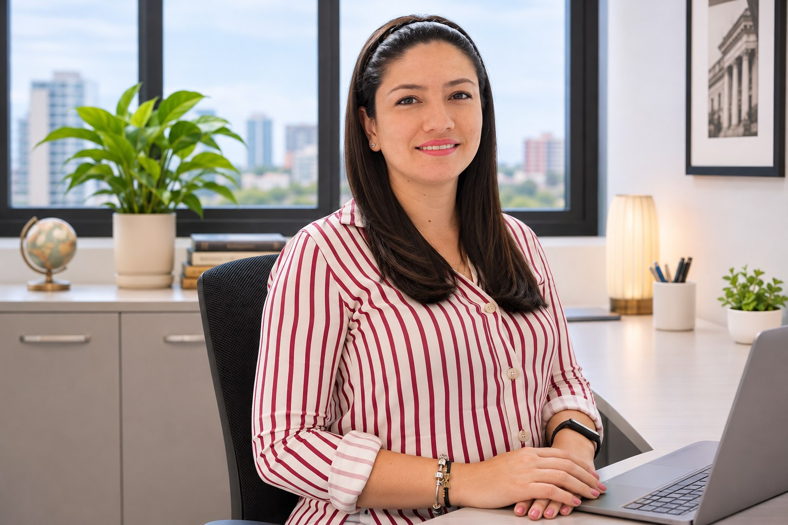
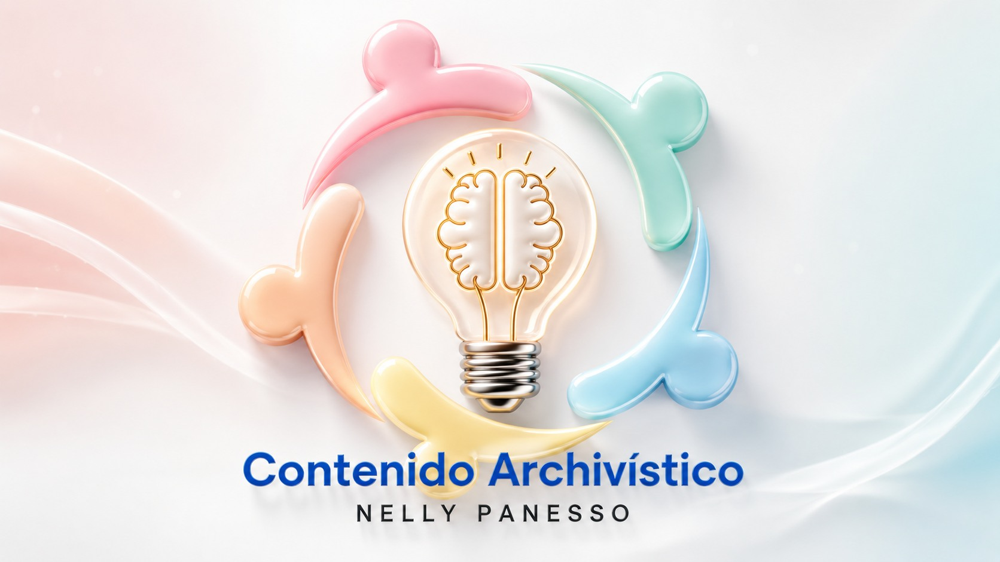

Gestión documental en los sectores público y privado.
Archivista · Consultora · Docente universitaria
Nelly
Panesso
Archivos que generan valor. Información que respalda decisiones.
Conocer Contenido Archivístico Explorar servicios especializados
02 Perfil profesional
Gestión documental con visión estratégica y compromiso social.
Soy archivista de la Universidad de Antioquia y magíster en Gestión Documental y Administración de Archivos de la Universidad de La Salle. Desde 2008 he trabajado con entidades públicas y empresas privadas, integrando la gestión técnica de archivos, la consultoría y la dirección de equipos.
He participado en la formulación y el desarrollo de proyectos archivísticos institucionales y liderado procesos de administración documental de alcance nacional. Soy docente universitaria de pregrado desde 2015 y de posgrado desde 2021, vinculando la experiencia profesional con la formación académica.
Mi compromiso con la archivística también se expresa en el liderazgo y la representación gremial, así como en Contenido Archivístico, el proyecto de divulgación que fundé para compartir conocimientos, experiencias e historias que acercan la profesión a la sociedad.
Creo en el valor de la información para fortalecer organizaciones, respaldar decisiones, garantizar derechos, preservar la memoria y contribuir a una sociedad más transparente e informada.
Pregrado desde 2015 y posgrado desde 2021.
Liderazgo de proyectos y coordinación de equipos de trabajo con diferentes roles y modalidades de contratación, orientados al cumplimiento de objetivos y a la generación de valor organizacional.
Creadora y directora de Contenido Archivístico.
Formación y actualización profesional
Conocimiento en permanente evolución.
Mi formación académica se complementa con una actualización continua en archivística, función pública, tecnología, docencia e idiomas. Esta preparación fortalece mi práctica profesional y los contenidos que llevo al aula.
Formación académica
Universidad de La Salle.
Universidad de Antioquia.
Actualización seleccionada
Competencias digitales aplicadas a la docencia
Universidad de La Salle · Contenidos educativos con IA, recursos interactivos y curaduría digital.
Fundamentos de la contratación estatal
ESAP · 20 horas.
Convalidación de Tablas de Retención Documental
Archivo General de la Nación · Consejos Territoriales de Archivo · 20 horas.
Proceso de Inspección, Vigilancia y Control
Archivo General de la Nación · 40 horas.
Archivos de Derechos Humanos, Memoria Histórica y Conflicto Armado
Archivo General de la Nación · Identificación y valoración · 40 horas.
Ver más formación continua
Ruta de Inspección, Vigilancia y Control de la Función Archivística
Archivo General de la Nación · 40 horas.
Inglés intermedio
Bunker Hill Community College · 140 horas.
Big Data y analítica de datos para profesionales de la información
Universidad de Antioquia y ASEIBI · 40 horas.
Firmas en medios electrónicos
Universidad de Antioquia y ASEIBI · 40 horas.
03 Trayectoria profesional
Dirección · docencia · consultoría · liderazgo
Una trayectoria que conecta instituciones, profesionales y conocimiento.
Experiencia de gestión, orientación académica y colaboración con entidades y redes profesionales, combinando resultados técnicos y capacidad de articulación entre personas.
Diseño de proyectos y liderazgo en gestión documental
Desde 2016 diseñé propuestas y brindé asesoría técnica y metodológica a proyectos de gestión documental desarrollados a través de la Escuela Interamericana de Bibliotecología de la Universidad de Antioquia para entidades públicas. Esta experiencia incluyó instrumentos archivísticos, programas de gestión documental y revisión de informes técnicos. Posteriormente, dirigí el área de Administración Documental de Coordinadora Mercantil S. A. (2018–2022), coordinando un equipo de más de 10 personas y liderando procesos de estandarización, mejoramiento y transición hacia la gestión electrónica de documentos de alcance nacional.
Formación universitaria
Docente de pregrado desde 2015 y de posgrado desde 2021 en la Universidad de Antioquia y la Universidad de La Salle. He impartido asignaturas de archivística, valoración documental, instrumentos archivísticos, transparencia y acceso a la información pública.
Proyectos institucionales
He participado en proyectos de asesoría y consultoría para municipios, entidades públicas y organizaciones, orientados a la planeación y al fortalecimiento de sus procesos documentales.
Redes profesionales
Fui presidenta de ASEIBI (2018–2020), he hecho parte de la Sociedad Colombiana de Archivistas y representado al Colegio Colombiano de Archivistas en el Consejo Distrital de Archivos de Turbo en 2025, hago parte de la Red de Emprendedoras en Archivística de Latinoamérica - REAL desde el 2024 y he sido conferencista en espacios académicos nacionales e internacionales.
04 Proyecto de divulgación

Contenido Archivístico
Conocimiento, historias y oportunidades para conectar archivos y sociedad.
Una iniciativa independiente creada en 2024 para difundir conocimiento, compartir experiencias y mostrar la importancia de la archivística en nuestra sociedad.
Su información, canales, cifras, catálogo audiovisual y testimonios cuentan ahora con un espacio propio.
05 Servicios profesionales
Información · valor agregado
La información como activo estratégico.
01 / CONSULTORÍA
Consultoría archivística
Intervención profesional puntual y de alcance definido para analizar una necesidad específica, emitir un diagnóstico y formular recomendaciones, lineamientos o una propuesta de solución en gestión documental y administración de archivos. Sus objetivos y entregables se acuerdan previamente.
Solicitar una consultoría02 / ASESORÍA TÉCNICA ESPECIALIZADA
Asesoría técnica especializada
Acompañamiento técnico continuo para organizaciones que estén desarrollando proyectos archivísticos de organización de archivos —clasificación, ordenación y descripción— o procesos de digitalización de documentos en soporte papel. Incluye orientación, seguimiento y resolución de consultas durante la ejecución.
Consultar asesoría técnica03 / FORMACIÓN Y CAPACITACIÓN
Cursos, talleres y conferencias
Diseño y desarrollo de cursos, talleres y conferencias sobre gestión documental, administración de archivos, instrumentos archivísticos y de gestión de información pública, transparencia y acceso a la información pública.
Servicio ofrecido para entidades públicas, empresas privadas, agremiaciones, instituciones de educación superior y centros de formación técnica y tecnológica.
Consultar sobre formación04 / ACOMPAÑAMIENTO ACADÉMICO
Acompañamiento académico
Acompañamiento académico para estudiantes de pregrado y posgrado en Archivística o gestión documental de cualquier institución educativa. Para obtener un descuento especial, debe acreditar su calidad de estudiante.
Consultar acompañamiento académico05 / NOTARY PUBLIC · MASSACHUSETTS, EE. UU.
Notary Public en Massachusetts
Atención en español e inglés para actos notariales presenciales. ¿Conoces a alguien en Massachusetts que necesite este servicio? Comparte esta página.
No soy abogada y no tengo autoridad para dar asesoría sobre inmigración ni otros asuntos legales.
Conocer más sobre Notary Public06 Reconocimientos
Reconocimiento profesional
Distinciones por el compromiso con la archivística.
Reconocimientos recibidos por aportes al fortalecimiento de la profesión y por la participación en instancias de representación archivística.
Archivo General de la Nación de Colombia
Reconocimiento por aportes a la consolidación y fortalecimiento de la profesión archivística.
Premio al Mérito Archivístico Juan Carlos García Fuentes
Otorgado por Archivistas en Red por las contribuciones a la gestión documental y a la profesión archivística en Colombia.
Alcaldía Distrital de Turbo, Antioquia
Reconocimiento por la labor como delegada del Colegio Colombiano de Archivistas ante el Consejo Distrital de Archivos de Turbo durante 2024–2025.
Conversemos.
Selecciona el tema de tu consulta, escribe tu nombre si lo deseas y cuéntame brevemente qué necesitas. Luego elige WhatsApp o correo electrónico: se abrirá un mensaje preparado para que lo revises y envíes desde la aplicación correspondiente.